File: 000810.gt.txt (if the image is defective, simply delete all Arabic text and the line will be excluded)
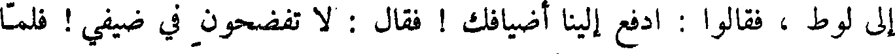
إلى لوط ، فقالوا : ادفع ألينا اضيافك ! فقال : لا تفضحون في ضيفي ! فلما
File: 000811.gt.txt (if the image is defective, simply delete all Arabic text and the line will be excluded)
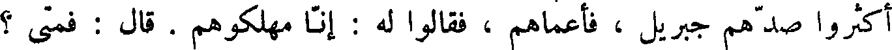
اكثروا صدهم جبريل ، فأعماهم ، فقالوا له : إنا مهلكوهم . قال : فمتى ؟
File: 000812.gt.txt (if the image is defective, simply delete all Arabic text and the line will be excluded)
قالوا : الصبح . قال : توخرونهم إلى الصبح ؟ قال له جبريل : أليس الصبح
File: 000813.gt.txt (if the image is defective, simply delete all Arabic text and the line will be excluded)
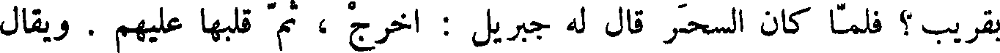
بقريب ؟ فلما كان السحر قال له جبريل : اخرج ، ثم قلبها عليهم . ويقال
File: 000814.gt.txt (if the image is defective, simply delete all Arabic text and the line will be excluded)
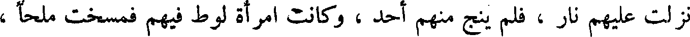
نزلت عليهم نار ، فلم ينج منهم أحد ، وكانت امرأة لوط فيهم فمسخت ملحا ،
File: 000815.gt.txt (if the image is defective, simply delete all Arabic text and the line will be excluded)
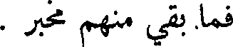
فما بقي منهم مخبر .
File: 000816.gt.txt (if the image is defective, simply delete all Arabic text and the line will be excluded)
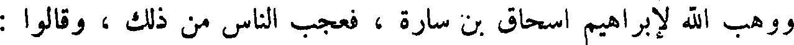
ووهب الله لإبراهيم إسحاق بن سارة ، فعجب الناس من ذلك ، وقالوا :
File: 000817.gt.txt (if the image is defective, simply delete all Arabic text and the line will be excluded)
شيخ ابن مائة سنة ، وعجوز بنت تسعين سنة ! فخرج إسحاق أشبه شيء بإبراهيم.
File: 000818.gt.txt (if the image is defective, simply delete all Arabic text and the line will be excluded)
وكان إبراهيم يزور إسماعيل وأمه في كل وقت . وبلغ إسماعيل حتى صار
File: 000819.gt.txt (if the image is defective, simply delete all Arabic text and the line will be excluded)
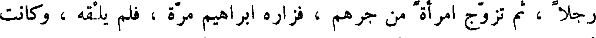
رجلا ، ثم تزوج امرأة من جرهم ، فزاره إبراهيم مرة ، فلم يلقه ، وكانت
File: 000820.gt.txt (if the image is defective, simply delete all Arabic text and the line will be excluded)
أمه قد ماتت ، فكلم امرأته فلم يرض عقلها ، وسألها عن إسماعيل ، فقالت :
File: 000821.gt.txt (if the image is defective, simply delete all Arabic text and the line will be excluded)
في الرعي ! فقال : إذا جاء فقولي له غير عتبة بابك ! فلما انصرف إسماعيل من
File: 000822.gt.txt (if the image is defective, simply delete all Arabic text and the line will be excluded)
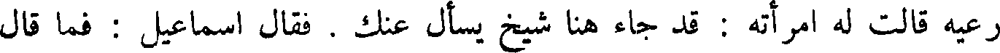
رعيه قالت له آمراته : قد جاء هنا شيخ يسأل عنك . فقال إسماعيل : فما قال
File: 000823.gt.txt (if the image is defective, simply delete all Arabic text and the line will be excluded)
لك ؟ قالت قال لي : قولي له غير عتبة بابك . قال : أنت خلية ! فطلقها ،
File: 000824.gt.txt (if the image is defective, simply delete all Arabic text and the line will be excluded)
عجلا من ذهب ، وقال : هذه آلهتكم التي أصعدتكم من ارض مصر ، واتخذ
File: 000825.gt.txt (if the image is defective, simply delete all Arabic text and the line will be excluded)
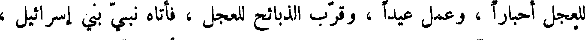
للعجل أحبارا ، وعمل عيدا ، وقرب الذبائح للعجل ، فأتاه نبي بني إسرائيل ،
File: 000826.gt.txt (if the image is defective, simply delete all Arabic text and the line will be excluded)
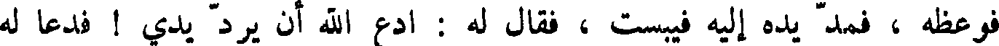
فوعظه ، فمد يده إليه فيبست ، فقال له : ادع الله أن يرد يدي ! فدعا له
File: 000827.gt.txt (if the image is defective, simply delete all Arabic text and the line will be excluded)
النبي ، فرجعت يد يوربعم ، وأقام يوربعم على طريقه لم يرجع عنها ، واهلك
File: 000828.gt.txt (if the image is defective, simply delete all Arabic text and the line will be excluded)
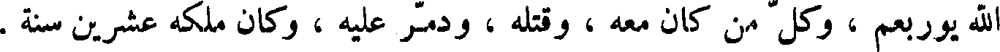
الله يوربعم ، وكل من كان معه ، وقتله ، ودمر عليه ، وكان ملكه عشرين سنة .
File: 000829.gt.txt (if the image is defective, simply delete all Arabic text and the line will be excluded)
ثم ملك ابيام بن رحبعم ، فسلك سبيل أبيه ، واظهر الفواحش ، وارتكب
File: 000830.gt.txt (if the image is defective, simply delete all Arabic text and the line will be excluded)
القبيح ، فتبر الله عمره ، وكان ملكه ثلاث سنين ؛ ثم ملك اسا ، فاظهر العمل
File: 000831.gt.txt (if the image is defective, simply delete all Arabic text and the line will be excluded)
بطاعة الله تعالى ، ومنع الزنا ، وعاقب عليه وعلى الريب ، واخرج من كان
File: 000832.gt.txt (if the image is defective, simply delete all Arabic text and the line will be excluded)
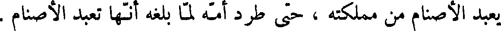
يعبد الأصنام من مملكته ، حتى طرد أمه لما بلغه أنها تعبد الأصنام .
File: 000833.gt.txt (if the image is defective, simply delete all Arabic text and the line will be excluded)
وفي زمانه صار زارح ملك الحبشة ، واقبل ملك الهند إلى بيت المقدس ،
File: 000834.gt.txt (if the image is defective, simply delete all Arabic text and the line will be excluded)
فبعث الله عذابا ، فأهلك زارح وملك الهند . وكان ملك اسا أربعين سنة ، ويقال
File: 000835.gt.txt (if the image is defective, simply delete all Arabic text and the line will be excluded)
إن بني إسرائيل أوقدوا من خشب أسلحة أصحاب الهند ، لما قتلهم اسا ، سبع
File: 000836.gt.txt (if the image is defective, simply delete all Arabic text and the line will be excluded)
سنين .
File: 000837.gt.txt (if the image is defective, simply delete all Arabic text and the line will be excluded)
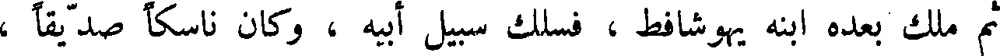
ثم ملك بعده ابنه يهوشافط ، فسلك سبيل أبيه ، وكان ناسكا صديقا ،
File: 000838.gt.txt (if the image is defective, simply delete all Arabic text and the line will be excluded)
فملك العشرة الأسباط ، وكان مرضيا في جميع بني إسرائيل ، وكان ملكه
File: 000839.gt.txt (if the image is defective, simply delete all Arabic text and the line will be excluded)
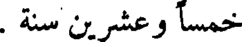
خمسا وعشرين سنة .
To Save: `Ctrl+s`, make sure to choose `Webpage, complete`!